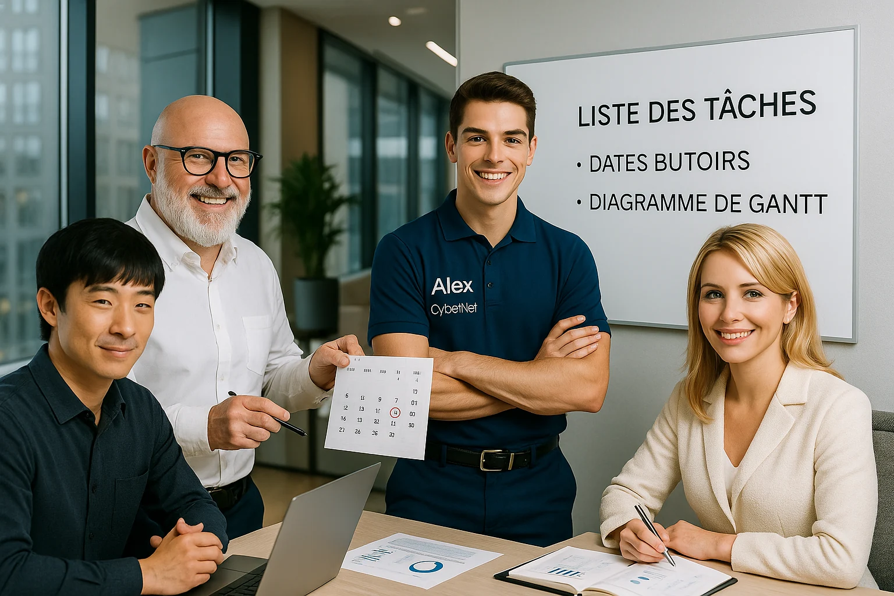

A3 • Mise en œuvre d’un projet réseau informatique • 4 parties, 11 chapitres
Objectifs pédagogiques
Comprendre ce qu’est un projet et ses spécificités
Identifier les rôles dans une équipe projet (chef de projet, contributeurs…)
Reconnaître les grandes étapes du cycle de vie d’un projet
Distinguer projet, activité courante et processus.
1. Fondamentaux du projet
Dans les métiers de l’informatique, beaucoup de missions prennent la forme de projets. Avant de planifier ou d’agir, il faut d’abord bien comprendre ce qu’est un projet, et ce qui le rend différent d’un simple travail de routine.
Définition d’un projet
Un projet est un ensemble d’activités temporaires (avec un début et une fin définis) mis en œuvre pour atteindre un objectif précis. Il mobilise des ressources dédiées (humaines, matérielles, financières) et doit respecter des contraintes de budget et de délai.
En d’autres termes, un projet se distingue des opérations courantes par son caractère unique et limité dans le temps. Il aboutit à un résultat concret (produit, service ou amélioration) correspondant à l’objectif fixé.
Les cinq éléments clés d’un projet
Tout projet comporte cinq éléments clés indissociables :
les objectifs à atteindre
le budget disponible
le délai imparti
les ressources mobilisées
la finalité attendue
Chacun de ces éléments doit être défini et géré avec soin pour assurer le succès du projet.
Les objectifs (cibler le besoin du client): Les objectifs représentent les résultats précis que le projet doit atteindre. Ils donnent une direction claire à l’équipe projet et servent de référence pour mesurer le succès une fois le projet terminé.
Exemple : Dans un projet de mise à jour du réseau d’entreprise, un objectif peut être d’augmenter le débit Internet par utilisateur de 100 Mb/s à 1 Gb/s. Cet objectif concret guide les actions de l’équipe technique tout au long du projet.
Le budget (éviter les dérives): Le budget est la somme des ressources financières allouées au projet. C’est l’enveloppe de fonds prévue pour couvrir les achats, les salaires, la sous-traitance, etc. Ce budget est fixé au départ et doit être respecté afin d’éviter les dépassements de coûts.
Exemple : Pour un projet d’installation d’un nouveau centre de données, un budget de 100 000 € peut être alloué. Ce budget couvre l’achat des serveurs, le câblage réseau du data center, les licences logicielles et le recours éventuel à des sous-traitants spécialisés pour l’installation.
Le délai (tenir les échéances): Le délai correspond au temps imparti pour réaliser le projet, généralement avec une date butoir fixée. Le projet suit un planning et doit être terminé dans les délais pour éviter les retards.
Exemple : Si une entreprise doit migrer son système vers un nouveau serveur avant l’expiration du contrat de maintenance de l’ancien, le projet aura un délai strict. Par exemple, la date butoir peut être fixée au 31 décembre, ce qui signifie que toutes les étapes (transfert des données, configuration, tests) doivent être terminées avant cette échéance.
Les ressources (mobiliser les bons moyens): Les ressources d’un projet représentent l’ensemble des moyens nécessaires pour le réaliser. Cela inclut les ressources:
humaines (équipe projet, experts, sous-traitants externes)
matérielles (équipements, infrastructures, outillage)
immatérielles (logiciels, licences, informations techniques).
Exemple : La réalisation d’un nouveau câblage en fibre optique dans un bâtiment mobilise par exemple une équipe interne de techniciens réseau, une entreprise sous-traitante spécialisée dans la fibre, le matériel de câblage (fibres, routeurs, outils de mesure) ainsi que les logiciels de test nécessaires. Ces ressources doivent être planifiées et coordonnées pour mener le projet à bien.
La finalité (ce que le projet va réellement changer): La finalité d’un projet correspond à sa raison d’être ou au bénéfice ultime qu’il apporte une fois achevé. C’est le résultat global recherché au-delà des objectifs immédiats – ce que le projet va changer ou améliorer de façon durable pour l’organisation ou les utilisateurs.
Exemple : Dans un projet de déploiement d’un nouveau logiciel de gestion client (CRM), la finalité peut être d’améliorer la satisfaction client et d’augmenter le chiffre d’affaires grâce à une meilleure gestion des ventes. Autrement dit, au-delà de l’installation technique du logiciel (objectif concret du projet), l’entreprise attend de ce projet un impact positif durable sur son activité commerciale.
Exercice récapitulatif
Indiquez pour chaque affirmation si elle est vraie ou fausse, puis justifiez votre réponse en complétant le tableau ci-dessous :
Exercice 1 : Vrai ou Faux - Projet ou pas projet ?
| Affirmation | Vrai / Faux | Justification |
| Un projet se caractérise par un objectif clair, une durée déterminée et des ressources définies. | ||
| Le délai est secondaire tant que les résultats techniques sont atteints. | ||
| Les ressources d’un projet informatique peuvent inclure le personnel interne, le matériel technique et des sous-traitants spécialisés. | ||
| Le budget d’un projet correspond uniquement aux dépenses d’équipement (matériel). | ||
| La finalité d’un projet est le bénéfice ou le résultat global attendu une fois le projet terminé. |
Corrigé – Exercice 1 : Vrai ou Faux
| Affirmation | Vrai / Faux | Justification |
| Un projet se caractérise par un objectif clair, une durée déterminée et des ressources définies. | Vrai | C’est la définition même d’un projet : il a un début, une fin, des moyens, un cadre. |
| Le délai est secondaire tant que les résultats techniques sont atteints. | Faux | Le respect des délais est crucial : tout retard peut impacter le coût ou la satisfaction du client. |
| Les ressources d’un projet informatique peuvent inclure le personnel interne, le matériel technique et des sous-traitants spécialisés. | Vrai | Toutes ces ressources (humaines et matérielles) doivent être planifiées et mobilisées. |
| Le budget d’un projet correspond uniquement aux dépenses d’équipement (matériel). | Faux | Le budget inclut aussi la main-d'œuvre, les prestations, les licences, les imprévus… |
| La finalité d’un projet est le bénéfice ou le résultat global attendu une fois le projet terminé. | Vrai | C’est ce qu’on attend du projet au-delà des objectifs techniques : le gain durable. |
2. Méthodes de gestion : Cycle en V et Agile
Pourquoi existe-t-il plusieurs méthodes ?
En gestion de projet, il n’existe pas une seule bonne méthode. Le choix dépend du type de projet, de sa complexité, du client, et du niveau de flexibilité nécessaire.
Dans le domaine de l’infrastructure réseau ou du système d'information, on retrouve principalement deux approches :
le Cycle en V
les méthodes Agiles (comme Scrum ou Kanban)
Le Cycle en V
Le Cycle en V est une méthode structurée et séquentielle. Chaque étape suit la précédente et on ne revient pas en arrière.
Principes :
On définit d'abord tous les besoins, toutes les spécifications et toutes les étapes avant de commencer à travailler.
Une fois l’implémentation commencée, on suit le plan sans le modifier.
Chaque phase a un début, une fin, et produit un livrable.
Avantages :
Vision claire du projet dès le départ
Idéal pour des projets techniquement bien définis (ex : câblage structuré, installation de baie, déploiement d’une solution réseau fixe)
Moins de risque de dérive si le besoin ne change pas
Inconvénients :
Peu de flexibilité : si les besoins du client évoluent, il faut tout revoir
Tests en fin de projet uniquement
Nécessite une définition très précise du projet dès le début
Exemple :
Une entreprise de transport fait appel à un prestataire pour installer un réseau fibre dans un entrepôt logistique. Les besoins sont connus, les plans sont validés, le matériel est commandé à l’avance. Le projet est planifié sur 6 semaines : études – installation – tests – livraison. C’est un projet idéal pour le Cycle en V.
La méthode Agile (Scrum, Kanban…)
La méthode Agile est une approche souple, évolutive, adaptée aux projets où les besoins peuvent changer en cours de route.
Principes :
On découpe le projet en petites étapes appelées itérations (ou sprints).
À la fin de chaque itération, on livre une partie fonctionnelle.
Le client intervient régulièrement pour tester, donner son avis et ajuster ses besoins.
L’équipe s’auto-organise, les priorités peuvent évoluer selon le contexte.
Avantages :
Adaptation facile aux changements de dernière minute
Communication constante avec le client
Réduction des erreurs grâce à des tests fréquents
Inconvénients :
Demande une forte implication du client
Moins adapté aux projets infrastructures fixes où tout doit être validé en amont
Difficulté à estimer précisément la durée totale du projet
Exemple :
Une société développe une nouvelle interface web pour la gestion de ses équipements réseau. Le client demande à tester l’interface toutes les deux semaines et veut pouvoir ajouter des fonctions en cours de route. L’équipe utilise Scrum pour livrer un module fonctionnel à chaque itération de 15 jours. Cette méthode Agile permet de s’adapter aux besoins changeants.
Voici un tableau comparatif des deux méthodes, utile pour choisir la bonne approche selon le type de projet.
Comparatif Cycle en V / Agile
| Critère | Cycle en V | Méthode Agile (Scrum, Kanban…) |
| Structure du projet | Séquentielle, étapes figées | Iterative, flexible |
| Implication du client | Forte au début, absente ensuite | Permanente |
| Flexibilité | Faible | Élevée |
| Livraison | En fin de projet | À chaque itération |
| Type de projet conseillé | Infrastructure, réseaux fixes | Logiciel, interfaces utilisateurs |
| Gestion du changement | Complexe | Facile |
Exercice 2 – Cycle en V ou Agile ? Fais le bon choix
Complète le tableau suivant en indiquant “Cycle en V” ou “Méthode Agile” pour chaque ligne.
| Caractéristique | Méthode |
| Le client peut faire évoluer ses demandes en cours de projet. | |
| Les tests sont réalisés uniquement à la fin du projet. | |
| Le projet est découpé en itérations appelées “sprints”. | |
| Tous les besoins sont définis et validés avant le démarrage. | |
| On livre un produit ou une fonctionnalité à chaque étape intermédiaire. | |
| Il est difficile de modifier le cahier des charges une fois le projet lancé. |
Corrigé – Exercice 2
| Caractéristique | Méthode |
| Le client peut faire évoluer ses demandes en cours de projet. | Méthode Agile |
| Les tests sont réalisés uniquement à la fin du projet. | Cycle en V |
| Le projet est découpé en itérations appelées “sprints”. | Méthode Agile |
| Tous les besoins sont définis et validés avant le démarrage. | Cycle en V |
| On livre un produit ou une fonctionnalité à chaque étape intermédiaire. | Méthode Agile |
| Il est difficile de modifier le cahier des charges une fois le projet lancé. | Cycle en V |
![Schéma pédagogique du cycle en V]()
3. Etapes d’un projet réseau
Pourquoi découper un projet en étapes ?
Un projet ne se réalise jamais en une seule étape. Il suit une progression logique, avec des phases bien identifiées. Cela permet :
de structurer le travail
de repérer les retards ou blocages
de mieux coordonner les intervenants
de garantir une livraison conforme à ce qui a été prévu
Les principales étapes d’un projet réseau
Recueillir les besoins Le client ou l’entreprise exprime ce qu’il attend. Cela peut être formel (réunion, document) ou plus flou (appel, demande orale). Exemple : “On ouvre un nouveau site logistique, il nous faut un réseau complet avec Internet, VLAN et sécurité.”
Évaluer la faisabilité L’équipe technique vérifie que le projet est réalisable techniquement, humainement et financièrement. Exemple : est-ce qu’il est possible de tirer de la fibre dans la zone ? Faut-il creuser ? Quelle est la disponibilité des équipes ?
Rédiger le cahier des charges Document contractuel qui liste les besoins, contraintes, ressources prévues, délais, matériel, etc. Il sert de référence tout au long du projet.
Concevoir la solution réseau L’équipe choisit les technologies, matériel, topologie, prestataires, etc. Elle élabore des schémas, des listes de matériel, un planning initial.
Planifier les tâches et jalons On découpe le projet en tâches, on attribue des ressources, on pose des jalons. Un planning est établi (souvent avec un diagramme de Gantt).
Installer les équipements On passe à l’action : pose de la baie, tirage de câbles, configuration des switches, etc. C’est la phase “terrain”.
Tester et valider la solution Une fois les installations terminées, on teste : connectivité, débit, sécurité, VLAN, accès aux serveurs, etc. On corrige si besoin.
Livrer et document la solution On remet l’ensemble au client : documentation, schémas, comptes-rendus, procédures, mots de passe, etc. Le client valide la fin du projet.
Assurer le suivi post-installation Pendant quelques jours ou semaines, on reste disponible pour les petits ajustements, les questions ou les incidents de démarrage.
Exercice 3 – Remettre les étapes dans le bon ordre
Voici un projet : une entreprise de conseil ouvre un nouveau bureau et veut un réseau opérationnel. Les étapes sont mélangées. Remets-les dans l’ordre logique de réalisation.
Configurer les équipements réseau
Transmettre la documentation complète au client
Écouter les besoins exprimés par le client
Établir un planning et attribuer les tâches
Rédiger le cahier des charges
Vérifier si le réseau peut être installé dans les délais et le budget
Effectuer les tests de connectivité et de performance
Concevoir l’architecture réseau et choisir les équipements
Assurer un suivi les premières semaines après l’installation
Corrigé – Exercice 3
| Ordre | Étape |
| 1 | Écouter les besoins exprimés par le client |
| 2 | Vérifier si le réseau peut être installé dans les délais et le budget |
| 3 | Rédiger le cahier des charges |
| 4 | Concevoir l’architecture réseau et choisir les équipements |
| 5 | Établir un planning et attribuer les tâches |
| 6 | Configurer les équipements réseau |
| 7 | Effectuer les tests de connectivité et de performance |
| 8 | Transmettre la documentation complète au client |
| 9 | Assurer un suivi les premières semaines après l’installation |
Objectifs pédagogiques
Découper un projet en tâches élémentaires
Construire un enchaînement logique entre les tâches (PERT, Gantt…)
Estimer la durée d’un projet en tenant compte des ressources et contraintes
Lire et interpréter un diagramme de Gantt.
4. Identifier les acteurs du projet réseau
Pourquoi identifier les acteurs ?
Mal les identifier, c’est :
contacter la mauvaise personne ➝ perte de temps
créer des conflits de responsabilité
mettre en danger le planning ou la qualité
Les principaux acteurs
| Acteur | Rôle | Exemple |
| Client | Commande et finance le projet | Le siège social demande un réseau dans un nouveau data center |
| Maître d’ouvrage (MOA) | Représente le client, exprime les besoins, valide les décisions | Directeur des services numériques |
| Maître d’œuvre (MOE) | Pilote la réalisation technique, transforme les besoins en solutions | Société spécialisée en réseaux |
| Chef de projet | Planifie, coordonne, suit l’avancement, gère les imprévus | Ingénieur en charge du déploiement |
| Intervenants techniques | Réalisent les tâches terrain | Techniciens, installateurs |
| Prestataires / sous-traitants | Entreprises ou indépendants externes | Pose de fibre optique par un sous-traitant |
Astuce : chaque acteur doit être clairement identifié, avec ses responsabilités.
Un projet sans rôles clairs = chaos assuré.
Exercice 4 – Qui fait quoi ?
Lis les situations suivantes et indique l’acteur concerné dans la colonne de droite. Choisis parmi : Client, MOA, MOE, Chef de projet, Intervenant technique, Sous-traitant
| Situation | Acteur |
| Rédige le cahier des charges initial à partir des besoins exprimés. | |
| Réalise physiquement la pose des câbles RJ45 et le branchement des prises murales. | |
| Supervise le respect du planning, coordonne les équipes, communique avec le client. | |
| Valide les choix techniques proposés par le maître d’œuvre. | |
| Apporte une nacelle élévatrice et réalise la montée des fibres optiques dans les étages. | |
| Décide de faire installer un réseau dans une nouvelle unité de production. |
Corrigé – Exercice 4
| Situation | Acteur |
| Rédige le cahier des charges initial à partir des besoins exprimés. | MOA |
| Réalise physiquement la pose des câbles RJ45 et le branchement des prises murales. | Intervenant technique |
| Supervise le respect du planning, coordonne les équipes, communique avec le client. | Chef de projet |
| Valide les choix techniques proposés par le maître d’œuvre. | Client ou MOA |
| Apporte une nacelle élévatrice et réalise la montée des fibres optiques dans les étages. | Sous-traitant |
| Décide de faire installer un réseau dans une nouvelle unité de production. | Client |
5. Construire un planning: tâches, dépendances et jalons
Pourquoi planifier un projet ?
Planifier un projet, c’est découper le travail dans le temps, pour :
savoir qui fait quoi et quand
anticiper les conflits de ressources
suivre l’avancement
respecter les délais
Un bon planning permet de visualiser clairement les étapes et les dépendances entre tâches.
Notions clés à retenir
| Terme | Définition | Exemple |
| Tâche | Action à réaliser avec durée, ressources, début et fin | Tirer le câblage entre le local technique et les étages |
| Dépendance | Une tâche ne peut commencer que si une autre est terminée | Configurer les switches après installation des baies |
| Ressource | Personne ou matériel mobilisé sur une tâche | Technicien fibre, nacelle |
| Jalon | Événement sans durée qui marque une étape importante | Livraison baie, fin câblage, recette client |
| Diagramme de Gantt | Planning visuel montrant l’ordre, les durées, dépendances, jalons | Diagramme sur papier ou avec un logiciel |
Exemple simple (papier)
Les tâches sont alignées
Les jalons sont représentés par des points (●)
On peut lire et analyser ce type de planning sans outil informatique
Exercice 5 – Lire un diagramme de Gantt (papier)
Voici un extrait de planning d’un projet de mise en réseau dans un entrepôt. À partir du diagramme suivant, réponds aux questions ci-dessous
Questions :
Combien de jalons comporte ce planning ? ……………………………………….
Quelle est la durée totale du projet (en semaines) ? …………………………….
Quelle tâche commence avant la livraison des équipements ? …………………………………………………………………………………………..
Quelle tâche dépend directement de la livraison ? …………………………………………………………………………………………..
Si la commande des équipements prend une semaine de plus, quelles tâches seront décalées ? …………………………………………………………………………………………..
Propose une solution pour rattraper le retard sans changer la date de fin du projet. …………………………………………………………………………………………..
Corrigé – Exercice 5
1 jalon (Livraison équipements)
6 semaines
Repérage du site commence avant la livraison
Installation de la baie de brassage dépend de la livraison
Si la commande prend plus de temps, la livraison est décalée → donc l’installation, le câblage et les tests seront retardés
Proposition possible : prévoir des équipes supplémentaires pour accélérer l’installation, ou faire certaines tâches en parallèle si possible (ex : câblage et préparation des switches)
![Exemple de diagramme de Gantt]()
6. Répartir efficacement les ressources
Pourquoi bien répartir les ressources ?
Dans un projet :
Les ressources sont limitées
Il faut affecter les bonnes personnes au bon moment
Éviter les conflits de planning
S’assurer que tout est disponible au bon moment
Les types de ressources
| Type | Exemples |
| Ressources humaines | Techniciens, chefs de projet, prestataires |
| Ressources matérielles | Switches, câbles, testeurs, nacelles |
| Ressources logicielles/documentaires | Plans réseau, outils de supervision, procédures |
Ce qu’il faut anticiper
Disponibilité des intervenants (congés, jours fériés, surcharge)
Livraison du matériel à temps
Compétences spécifiques (ex : tout le monde ne sait pas certifier une fibre optique)
Matériel mutualisé (ex : une seule nacelle pour 2 sites → conflits si non planifié)
Astuce : une tâche = au moins une ressource humaine + les outils et le matériel nécessaire
Tout doit être disponible au moment prévu, sinon le planning dérape.
Exercice 6 – Complète le tableau de répartition
Voici une liste de tâches prévues sur un site industriel. À toi d’attribuer les bonnes ressources humaines et matérielles pour chaque tâche.
| Tâche prévue | Ressource humaine | Ressource matérielle principale |
| Pose des goulottes murales | ||
| Câblage RJ45 sur deux étages | ||
| Configuration des switches L2 | ||
| Certification des liens cuivre | ||
| Installation d’une baie dans un local exigu | ||
| Déploiement du logiciel de supervision réseau |
Corrigé – Exercice 6
(d’autres réponses peuvent être acceptées selon logique et cohérence)
| Tâche prévue | Ressource humaine | Ressource matérielle principale |
| Pose des goulottes murales | Technicien électricien réseau | Perceuse, visserie, goulottes |
| Câblage RJ45 sur deux étages | Technicien cuivre + aide | Câble Cat6a, dénudeur, connecteurs |
| Configuration des switches L2 | Technicien confirmé / Admin réseau | PC portable, câble console, switches |
| Certification des liens cuivre | Technicien certifié | Testeur de câblage type Fluke |
| Installation d’une baie dans un local exigu | Deux techniciens (manutention) | Baie de brassage, visserie, gants |
| Déploiement du logiciel de supervision réseau | Administrateur système | Logiciel de supervision, guide d’install |
Objectifs pédagogiques
Suivre l’avancement d’un projet et identifier les retards ou écarts
Réagir efficacement aux imprévus en ajustant planning et/ou ressources
Mettre en place une communication claire au sein de l’équipe projet
Utiliser des outils de suivi simples (tableaux de bord, points hebdo...)
7. Gérer les aléas et les imprévus
Pourquoi parler d’imprévus ?
Même avec un bon planning, un projet n’est jamais un long fleuve tranquille. Il faut savoir :
anticiper les risques,
détecter les imprévus rapidement,
s’adapter sans paniquer,
proposer des solutions sans attendre “les consignes”.
C’est une compétence clé pour tout professionnel impliqué dans un projet technique.
Exemples d’imprévus fréquents dans les projets réseau
Retard de livraison (matériel bloqué chez le fournisseur)
Absence d’un technicien (maladie, accident)
Erreur dans les plans (longueur de câbles sous-estimée)
Problème d’accès au site (clé oubliée, badge manquant, zone inondée)
Demande de dernière minute du client (modification d’implantation, ajout d’un switch)
Comment réagir efficacement
Faire un point rapide de la situation
Identifier les tâches encore possibles malgré le problème
Alerter le chef de projet ou le client, sans dramatiser
Proposer une solution (replanifier, permuter, anticiper une autre tâche…)
Documenter l’événement dans le journal de suivi du projet (date, heure, nature de l’incident, actions décidées).
Astuce :
Un imprévu bien géré ne bloque pas le projet.
Un imprévu mal géré le fait dérailler.
Exercice 7 – Que faire si… ?
Lis chaque situation, puis indique comment tu réagirais pour limiter l’impact sur le projet. Formule une réponse claire, orientée solution.
| Situation | Que fais-tu ? |
| Le fournisseur de baie de brassage annonce 5 jours de retard. | |
| Le client demande, le jour du chantier, d’ajouter 2 prises réseau dans une salle. | |
| Le technicien spécialisé VLAN est absent et n’est pas remplaçable avant 3 jours. | |
| En arrivant sur site, l’équipe découvre qu’elle ne peut pas accéder à la salle technique. |
Corrigé – Exercice 7 (exemples de réponses)
| Situation | Que fais-tu ? |
| Le fournisseur de baie de brassage annonce 5 jours de retard. | Informer le chef de projet et anticiper les autres tâches possibles (ex : pose de goulottes, câblage partiel). Adapter le planning. |
| Le client demande, le jour du chantier, d’ajouter 2 prises réseau dans une salle. | Noter la demande, vérifier si le matériel est suffisant, informer le chef de projet pour validation. |
| Le technicien spécialisé VLAN est absent et n’est pas remplaçable avant 3 jours. | Maintenir les autres tâches réseau (branchement physique), documenter l’impact et prévoir le slot VLAN dès son retour. |
| En arrivant sur site, l’équipe découvre qu’elle ne peut pas accéder à la salle technique. | Contacter l’interlocuteur client ou le responsable site, alerter immédiatement, proposer de déplacer les tâches accessibles en attendant. |
8. Les réunions dans un projet
À quoi servent les réunions dans un projet ?
Les réunions sont des moments clés dans la gestion de projet. Elles permettent de :
partager les informations,
prendre des décisions,
résoudre des problèmes,
valider les étapes,
éviter les malentendus.
Les différents types de réunions
Réunion de lancement Objectif : aligner tous les acteurs sur les objectifs, les rôles, le planning. Exemple : présentation du projet d'installation réseau à tous les intervenants.
Réunions de suivi Objectif : faire le point sur l’avancement, gérer les aléas, adapter si besoin. Exemple : réunion hebdo entre le chef de projet et les techniciens.
Réunions de coordination technique Objectif : synchroniser les sous-traitants, résoudre les conflits de planning ou d’espace. Exemple : ajuster le calendrier de passage entre l’équipe fibre et l’équipe RJ45.
Réunion de clôture Objectif : valider la livraison, échanger sur les points forts / à améliorer. Exemple : retour d’expérience sur le chantier de mise en réseau d’un entrepôt.
Bonnes pratiques d’une réunion efficace
Préparer un ordre du jour clair : objectifs et points à traiter
Respecter la durée annoncée
Prendre des décisions concrètes, affecter les actions
Rédiger un compte-rendu synthétique : qui fait quoi, pour quand
Partager les infos avec tous les acteurs concernés
Exercice 8 – Prépare une réunion projet
Contexte : Un prestataire n’a pas pu terminer l’installation de la baie de brassage. Le chantier prend du retard. Une réunion de coordination est organisée demain à 9h. Tu es chargé d’en préparer le contenu.
À faire :
Rédige un ordre du jour en 4 points
Liste les acteurs concernés par cette réunion
Propose deux documents utiles à apporter
Corrigé – Exercice 8
Ordre du jour :
Bilan des travaux réalisés à date
Analyse du retard (causes, impact)
Nouvelles dates de passage du prestataire
Mise à jour du planning global
Acteurs concernés :
Chef de projet
Représentant du prestataire
Responsable du site client
Coordinateur technique
Documents utiles à apporter :
Planning initial (diagramme de Gantt)
Fiche de suivi d’avancement chantier
9. Communication & reporting dans un projet
Pourquoi communiquer dans un projet ?
Un bon projet mal communiqué = un projet en danger
La communication est essentielle pour :
maintenir la coordination entre les intervenants
informer le client de l’avancement
faire remonter les problèmes à temps
documenter les décisions, les actions, les incidents
Les types de communication dans un projet
Communication ascendante Vers le responsable de projet, la hiérarchie ou le client. Exemple : “Le chantier de câblage est terminé, tests OK, validation demain.”
Communication descendante Du chef de projet vers les équipes. Exemple : “Attention, livraison des switches avancée à mercredi matin.”
Communication transversale Entre intervenants (tech -> tech, prestataire -> prestataire). Exemple : “Tu peux me confirmer que les VLAN sont bien définis avant la configuration ?”
Les outils de communication courants
Messages internes : via email, Microsoft Teams ou des plateformes collaboratives
Rapports d’avancement
Fiches de suivi
Réunions de chantier
Messages internes / CRM / plateforme collaborative Documentation projet (partagée)
Le reporting
Le reporting, c’est le fait de rendre compte de l’avancement du projet. Il peut être :
quotidien : pour des projets courts ou critiques
hebdomadaire : pour le suivi normal
ponctuel : après un jalon, un incident, un changement de plan
Un bon reporting est :
clair
factuel (présentation des faits sans les interpréter)
sans émotion ni jugement
orienté solution
Exercice 9 – Réécriture d’un message de projet
Lis le message ci-dessous, puis réécris-le de façon claire, professionnelle et efficace.
Message reçu :
“Salut, j’sais pas trop ce qu’il faut faire mais y a pas les câbles et du coup bah on est bloqués. Peut-être que quelqu’un a oublié de commander ? C’est le bazar ici. Voilà.”
À faire :
Transforme ce message en un mail pro à destination du chef de projet Le message doit :
exposer le problème clairement
proposer une solution ou demander une action
rester neutre et constructif
Corrigé – Exercice 9
Objet : Retard livraison câbles – Blocage chantier
Bonjour,
Lors de la préparation du chantier ce matin, nous avons constaté que les câbles RJ45 n’ont pas été livrés.
Cette absence empêche la poursuite des travaux de câblage sur le site.
Pouvez-vous vérifier si la commande a bien été passée ?
En fonction du délai, nous pouvons éventuellement avancer une autre tâche en attendant (ex : pose de goulottes).
Cordialement,
[Signature]
Objectifs pédagogiques
Mettre en place une clôture formelle : formaliser la fin du projet (bon de livraison, procès-verbal, signature de réception).
Identifier et produire tous les livrables finaux : plans, documentations, procédures, comptes-rendus de tests, guide utilisateur…
Organiser l’archivage et la transmission : structurer et stocker les documents pour une consultation future (serveur, GED, dossier projet).
Conduire un retour d’expérience (REX) : collecter les retours, analyser succès et points d’amélioration.
Rédiger un rapport de conclusions : synthétiser les enseignements, proposer des axes d’amélioration pour les prochains projets.
Valoriser les compétences acquises : faire le lien entre théorie et pratique, préparer la valorisation en stage ou en entreprise.
10. Clôture d’un projet et livrables
Pourquoi bien clôturer un projet ?
Clôturer un projet ne signifie pas simplement ranger les câbles et éteindre les PC. C’est une phase critique qui permet de valider, transmettre, et apprendre. Voici les éléments essentiels à vérifier avant d’envisager la fin du projet :
tout est livré au client,
tout est documenté,
le client a validé la réalisation,
le bilan est réalisé,
une éventuelle phase de suivi est mise en place.
Les éléments à vérifier avant de clôturer
Les objectifs ont-ils été atteints ? Vérifier que toutes les prestations prévues ont été réalisées.
Les tests ont-ils été faits et validés ? Connexions, débit, sécurité, VLAN, supervision…
La documentation est-elle complète ? Cahier de recette, plans, mots de passe, manuels, procédures de maintenance…
Le client a-t-il signé la réception ? C’est l’étape juridique qui valide la fin du projet.
Un retour d’expérience a-t-il été rédigé ? Ce bilan permet d’améliorer les projets futurs.
Les livrables de fin de projet
Un livrable, c’est tout document ou élément remis officiellement au client à la fin du projet. On y trouve souvent :
Techniques :
Plans réseau (implantation, adressage IP, VLAN)
Documentation technique (configuration, procédures, mots de passe)
Procédures d'exploitation et de maintenance
Comptes rendus de recette et de tests
Administratifs :
Bon de livraison
Procès-verbal de réception
Planning final mis à jour
Fonctionnels :
Guide utilisateur (si besoin)
Fiche de support ou de contact
Astuce :
Un projet sans documentation = un projet inutilisable dans 6 mois.
Exercice 10 – Complète la séquence à trous
Complète les phrases suivantes avec les bons mots parmi ceux proposés : réception, tests, documentation, livrables, bilan, client
Avant la fin du projet, il est important de vérifier que tous les …………….……… ont été effectués avec succès.
Une fois le projet terminé, un procès-verbal de ………………..…….. doit être signé.
La …………………………… remise au client contient toutes les procédures et les schémas du réseau.
L’équipe projet doit produire un ……………………… pour identifier ce qui a bien ou mal fonctionné.
Tous les éléments remis au ………………… doivent être complets et organisés.
Les différents documents fournis à la fin du projet sont appelés ……………………...
Corrigé – Exercice 10
tests
réception
documentation
bilan
client
livrables
11. Le retour d’expérience (REx)
Pourquoi faire un retour d’expérience ?
Le retour d’expérience (ou REX) est une étape importante dans la gestion de projet. Elle permet de :
analyser ce qui a bien fonctionné et pourquoi
identifier les erreurs ou difficultés rencontrées
proposer des améliorations concrètes pour les futurs projets
valoriser le travail de l’équipe.
Le REX n’est pas un jugement : c’est un outil d’amélioration continue.
Comment faire un REX ?
Le retour d’expérience peut se faire :
à l’oral, lors d’une réunion d’équipe ou d’un debrief
par écrit, sous forme de rapport court ou de grille de synthèse.
Les éléments à analyser peuvent porter sur :
l’organisation (planning, coordination, réunions…)
la technique (câblage, configuration, tests…)
la communication (avec le client, en interne…)
les outils utilisés (efficaces ? adaptés ?)
Exemple de questions utiles
Les délais ont-ils été tenus ?
Quelles tâches ont posé problème ?
Les imprévus ont-ils été bien gérés ?
Le client a-t-il été satisfait ?
Que referait-on exactement pareil ? Qu’est-ce qu’on changerait ?
🛠️ Astuce pro
Un bon REX tient sur une page A4 : clair, structuré, sans blabla Il peut être partagé à toute l’équipe et archivé dans le dossier projet.
Exercice 11 – Rédige ton REX
Contexte : Tu viens de terminer un projet d’installation réseau dans un bâtiment neuf. Tu es chargé de rédiger un court retour d’expérience.
Voici les observations collectées par l’équipe. Pour chaque ligne :
Classe-la dans la colonne « À classer comme » en écrivant : “Réussite” ou “Point à améliorer”
Puis, propose une amélioration réaliste pour les “point à améliorer.
| Observation | À classer comme…Réussite / Point à améliorer | Amélioration proposée (si c’est un point à améliorer) |
| La livraison des switches a été retardée de 3 jours. | ? | ? |
| Le câblage a été parfaitement exécuté selon le plan. | ? | ? |
| Le client n’a pas été prévenu du décalage de planning. | ? | ? |
| Les tests de débit ont montré une très bonne performance. | ? | ? |
| Certains mots de passe n’ont pas été transmis clairement. | ? | ? |
Corrigé - Exercice 11
| Observation | À classer comme…Réussite / Point à améliorer | Amélioration proposée (si c’est un point à améliorer) |
| La livraison des switches a été retardée de 3 jours. | ❌ Point à améliorer | Commander le matériel plus tôt pour éviter les retards. |
| Le câblage a été parfaitement exécuté selon le plan. | ✅ Réussite | – |
| Le client n’a pas été prévenu du décalage de planning. | ❌ Point à améliorer | Prévenir le client dès qu’on sait qu’il y aura un retard. |
| Les tests de débit ont montré une très bonne performance. | ✅ Réussite | – |
| Certains mots de passe n’ont pas été transmis clairement. | ❌ Point à améliorer | Préparer un document clair avec tous les accès à remettre au client |